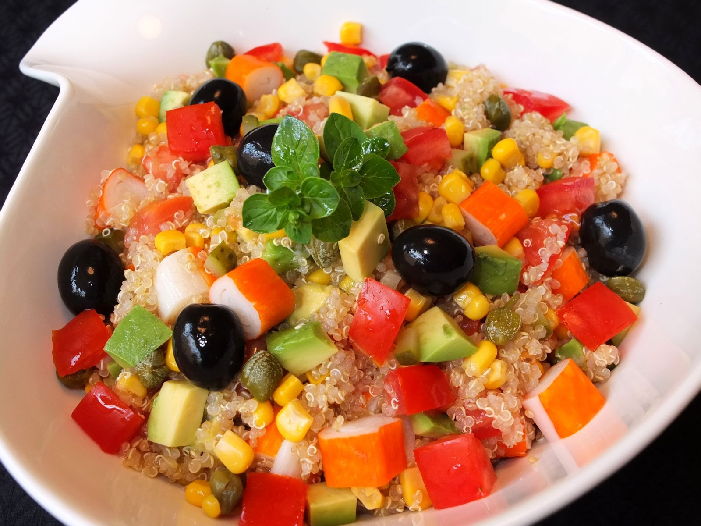

Receta Nro 1 :
Ensalada de quinoa con verduras y aguacate
La quinoa es una excelente fuente de proteinas completas, rica en fibra y minerales.
Anadir verduras frescas como espinaca, pepino y tomate junto con aguacate aporta grasas saludables y antioxidantes.
ingredientes:
1 taza de quinoa
1 aguacate
1 tomate
1 pepino
Hojas de espinaca
Jugo de 1 limon
Aceite de oliva
Sal y pimienta al gusto
Instrucciones:
Enjuaga la quinoa bajo el agua y cocinala en una olla con el doble de agua (2 tazas). Hierve, luego baja el fuego y deja cocinar a fuego lento durante 15 minutos o hasta que absorba el agua. Deja enfriar.
Pica el tomate, pepino y aguacate en cubos.
Mezcla la quinoa cocida con las verduras y las hojas de espinaca.
Alina con jugo de limon, un chorrito de aceite de oliva, sal y pimienta al gusto.
